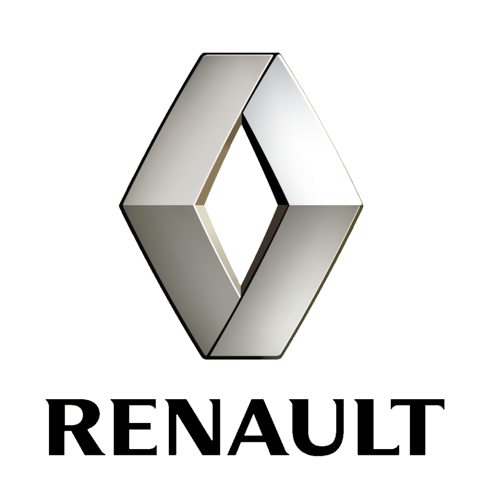

LuxAuto este un service auto ce va pune la dispozitie, o gama larga de servicii pentru masini de diferite marci. Profesonalismul si devotamentul echipei, o sa se simta pana la cel mai mic detaliu si datorita acestui fapt, consideram ca suntem cel mai potrivit service auto din Botosani, pentru nevoile dumneavoastra.
Totul a pornit de la noi, Cosmin si Costel. Am creat o echipa tanara, pasionata de domeniul auto care se afla intr-o continua dezvoltare.
Compania noastra se afla pe piata auto din anul 2015, progresand vizibil in fiecare an. Mizam pe PROFESIONALISM si CALITATE iar asta ne ajuta sa stabilim o relatie de incredere cu toti clientii nostri.Personalul nostru este gata sa se ocupe de orice reparatie auto necesara sau de orice problema pe care o puteti intampina cu masina.
Va punem la dispozitie servicii pentru masini, de cea mai buna calitate, printre care putem enumera: schimb de ulei si filtre, revizii periodice, inlocuire parbrize si lunete, geometrie roti, reparatii sisteme de franare, achizitie si schimbare de cauciucuri dar si alte servicii mult mai complexe, pentru care va invitam sa ne faceti o vizita la sediul nostru sau sa ne contactati, la telefon sau prin email, deoarece numai asa puteti sa aveti parte, dumneavoastra si masina dumneavoastra, de o experienta pe care cu siguranta o sa va doriti sa o retraiti.
Alegand sa aduceti masina in service-ul nostru, nu faceti decat sa va usurati problema cu diagnosticarea si rezolvarea defectiunilor tehnice, deoarece detinem echipamentul necesar pentru o diagnoza auto cat mai precisa. In consecinta, alegand service-ul LUXAUTO, eliminati pierderea timpului cu diverse presupuneri inutile si costisitoare. Diagnoza auto de care o sa aiba parte masina dumneavoastra o sa va scuteasca de cheltuieli suplimentare, astfel nu o sa mai trebuieasca sa cheltuiti sume mari de bani doar cu diagnosticarea defectiunii.
LuxAuto este un service auto, in care serviciile de mecanica auto, vopsitorie auto si tinechigeria auto, plus si alte servicii auto, sunt oferite cu un grad ridicat de profesionalism, deoarece numai asa clientii nostri vor fi multumiti si relatia client service auto o sa fie o experienta mai mult decat placuta.
Pana in prezent am beneficiat de trei ori de serviciile lor.Detin un SUV Hyundai mai vechi cu care am mers prima data la ei in 2020 pentru un schimb de ulei, doar pe baza recenziilor vazute pe Google. De atunci revin la ei de fiecare data cand am nevoie.Ii apreciez pentru calitatea lucrarilor si atitudinea lor fata de clienti dar si pentru cat de usor este sa iti faci o programare si cat de repede iti pun la dispozitie devizul cu piesele necesare si contravaloarea lucrarilor.Sper sa ii alegeti!
Baietii sunt foarte ok, eu am avut nevoie sa revopsesc bara fata deoarece fusese vopsita in reprezentanta Kia si la 2-3 ani dupa asta a inceput sa se cojeasca lacul, asa de bine au vopsit in reprezentanta. Am mers la LUXAUTO pentru recenzii, care pareau foarte ok mai ales pe partea de vopsitorie. Rezultatul este pe asteptari, bara arata perfect si o sa mai revin cu siguranta, la nevoie.
Buna ziua, va recomandam acest Service, sunt adevarati profesionisti, am avut masina la vopsit,pe langa ca arata impecabil ,timpul de asteptare a fost destul de scurt vizavi de alte service-uri, la preluarea masinei am avut si surpriza ca masina sa fie curata atât în interiorul si în exteriorul ei. Va multumesc LUXAUTO!